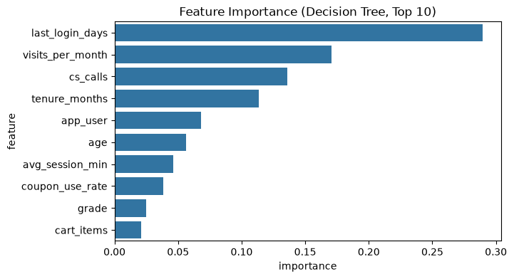

[8주차] 모델 성능 개선: 교차 검증, 격자 탐색, 변수 중요도
비즈니스빅데이터분석
8주차
모델 성능 개선: 교차 검증, 격자 탐색, 변수 중요도
2027학년도 「비즈니스빅데이터분석」의 준비 중인 교재입니다. 편집 상태를 검토하기 위해 미리 공개한 것으로, 수업 전에 내용과 순서가 바뀔 수 있습니다.
학사 10주차 · 교재 08 · 3부 AI 모델링 · 출제 분야: AI 모델링 > 모델 성능 개선 및 그래픽 출력
AICE Associate의 AI 모델링 문항은 모델을 한 번 학습시키고 끝나지 않는다. 가이드가 하이퍼파라미터의 후보와 교차 검증의 횟수를 주고 격자 탐색으로 가장 나은 설정을 찾게 하거나, 찾은 최적 모델로 검증용 데이터를 예측하게 하거나, 변수 중요도를 정렬하여 막대그래프로 그리게 한다. 이어서 “중요도가 가장 큰 열의 이름”이나 “최적의 max_depth”를 답 변수에 저장하게 한다. 이 문항들은 한 문항 안에서 탐색, 추출, 예측, 그래프가 이어지므로 앞 단계의 작은 실수가 같은 문항의 뒤 단계를 모두 틀리게 만든다.
본 장은 교차 검증(cross_val_score, KFold, StratifiedKFold), 격자 탐색(GridSearchCV)의 탐색 범위와 평가 기준, 최적 설정과 최적 모델의 추출, 훈련 점수와 검증 점수로 과대적합을 확인하는 방법, 변수 중요도의 표와 막대그래프를 다룬다. 7장의 분류용 훈련·검증 데이터와 랜덤 포레스트를 이어서 쓰며, 7장의 끝에서 확인한 문제(이탈 비율이 19.5%여서 정확도만으로는 모델을 판단할 수 없다)를 평가 기준의 선택으로 다시 다룬다.
학습 목표
- 교차 검증의 절차를 설명하고,
cross_val_score로 겹마다의 점수와 평균을 구한다. KFold와StratifiedKFold의 차이를 설명하고, 분류 문제에서 층화한 겹을 사용한다.- 탐색 범위를 딕셔너리로 작성하고,
GridSearchCV의param_grid,scoring,cv인자를 가이드대로 지정한다. best_params_,best_score_,best_estimator_로 최적 설정과 최적 모델을 추출하고, 최적 모델로 검증용 데이터를 평가한다.- 훈련 점수와 검증 점수의 차이로 과대적합을 확인하고,
cv_results_를 표로 읽는다. feature_importances_를 열 이름과 함께 정렬하여 표와 막대그래프로 작성하고, 가장 중요한 열의 이름을 답 변수에 저장한다.
준비 사항
| 항목 | 내용 |
|---|---|
| 실습 노트북 | AICE_08주차_실습_학생용.ipynb |
| 자료 | customers.csv(학기 공통 자료), loans.csv(시간 제한 문항용). 둘 다 assets/data/AICE_공통/에 있다 |
| 앞 장과의 연계 | 7장의 분류용 층화 분할(X_train 2352행, X_valid 588행, 입력 24열), 의사결정나무와 랜덤 포레스트, F1과 class_weight |
| 앞 과목과의 연계 | 「빅데이터 개론」 10장(교차 검증과 과대적합의 의미), 「파이썬 기초」 10장(딕셔너리) |
| 실습 환경 | 접속과 설치는 부록 A를 따른다 |
노트북의 첫 코드 셀은 3장(정제), 4장(인코딩), 7장(분류용 층화 분할)의 처리를 그대로 재현한다. 실행하면 (2352, 24) (588, 24) 0.195 0.196이 출력된다. 훈련용 2,352행과 검증용 588행이고, 두 데이터의 이탈 비율은 각각 0.195와 0.196이다.
본 장의 나무 모델은 모두 스케일링하지 않은 X_train, X_valid로 학습한다. 나무 모델은 값의 크기 순서로 분할 기준을 찾으므로 스케일링의 영향을 받지 않고, 데이터프레임인 X_train은 열 이름을 가지고 있어 5절의 변수 중요도를 읽기 쉽다. 스케일링한 X_train_s는 계수를 쓰는 로지스틱 회귀에만 쓴다(연습 1).
1. 교차 검증
1.1 한 번의 검증이 가진 한계
7장까지는 훈련용 데이터로 학습하고 검증용 데이터로 한 번 평가하였다. 이 방식은 간단하지만 점수가 검증용 데이터에 어떤 행이 들어갔는가에 따라 달라진다. 검증용 데이터가 588행이고 그 가운데 이탈 회원은 115명 정도이므로, 몇 명의 예측이 맞고 틀림에 따라 F1이 크게 움직인다. 이 점수로 하이퍼파라미터를 여러 번 바꾸어 가며 고르면, 그 검증용 데이터에 우연히 잘 맞는 설정을 고르게 되어 검증용 데이터가 처음 보는 데이터의 역할을 하지 못한다.
교차 검증(cross-validation)은 훈련용 데이터를 k개의 부분(겹, fold)으로 나누고, 한 겹을 검증에, 나머지 k-1겹을 학습에 쓰는 일을 k번 반복한다. 겹마다 점수가 하나씩 나오므로 k개의 점수를 얻고, 그 평균을 설정의 성능으로 본다. 모든 행이 한 번씩 검증에 쓰이므로 한 번의 분할에 의존하지 않는다. scikit-learn의 사용자 안내서는 교차 검증을 쓰면 별도의 검증 세트가 필요 없지만 최종 평가를 위한 데이터는 따로 떼어 두어야 한다고 설명한다. 본 과목에서는 훈련용 데이터 안에서 교차 검증을 하고, 처음에 떼어 둔 검증용 데이터(X_valid)는 최종 평가에만 쓴다.
1.2 cross_val_score
from sklearn.model_selection import cross_val_score
from sklearn.tree import DecisionTreeClassifier
tree = DecisionTreeClassifier(max_depth=5, random_state=42)
scores = cross_val_score(tree, X_train, y_train, cv=5)
print(scores.round(4))
print(scores.mean().round(4))[0.8153 0.828 0.8298 0.8234 0.8106]
0.8214cross_val_score(모델, 입력, 목표, cv=겹의 수)는 모델을 겹의 수만큼 학습시키고 평가하여 점수의 배열을 돌려준다. 배열의 길이는 겹의 수와 같다. 넘겨준 모델 객체 자체는 학습되지 않는다. 함수가 모델을 복제하여 겹마다 새로 학습시키기 때문이다. 따라서 cross_val_score를 실행한 뒤에 tree.predict(...)를 호출하면 학습되지 않은 모델이라는 오류가 난다. 예측에 쓸 모델은 따로 fit해야 한다.
| 인자 | 뜻 | 기본값 |
|---|---|---|
estimator |
평가할 모델 객체 | (필수) |
X, y |
입력과 목표. 본 과목에서는 X_train, y_train |
(필수) |
cv |
겹의 수 또는 분할 객체 | None(5겹) |
scoring |
평가 기준의 이름 | None(모델의 기본 점수. 분류 모델은 정확도) |
출력의 첫 줄은 겹 다섯 개의 정확도이고 둘째 줄은 그 평균(0.8214)이다. scoring을 지정하지 않았으므로 분류 모델의 기본 점수인 정확도가 계산되었다. 이 자료는 이탈 비율이 19.5%이므로 정확도는 7장에서 본 것처럼 모델의 차이를 잘 드러내지 못한다. 평가 기준을 F1로 바꾸려면 scoring="f1"을 지정한다.
scores_f1 = cross_val_score(tree, X_train, y_train, cv=5, scoring="f1")
print(scores_f1.round(4))
print(scores_f1.mean().round(4), scores_f1.std().round(4))[0.479 0.5091 0.4521 0.3759 0.3862]
0.4405 0.0518같은 모델인데 겹에 따라 F1이 0.3759에서 0.5091까지 달라진다. 표준편차는 0.0518이다. 1.1절에서 말한 “한 번의 검증 점수는 어떤 행이 들어갔는가에 따라 달라진다”는 것이 이 출력에 그대로 드러난다. 다섯 점수의 평균 0.4405가 한 번의 점수보다 믿을 만한 까닭이다. scoring에 쓰는 이름은 문자열이며, 자주 쓰는 것은 다음과 같다. 이름의 전체 목록은 scikit-learn 사용자 안내서의 「Metrics and scoring」에 있다.
| 문제 | scoring 값 |
뜻 |
|---|---|---|
| 분류 | "accuracy" |
정확도 |
| 분류 | "precision", "recall", "f1" |
정밀도, 재현율, F1(이진 분류의 양성 범주 기준) |
| 분류 | "roc_auc" |
ROC 곡선 아래 면적 |
| 회귀 | "neg_mean_absolute_error", "neg_mean_squared_error" |
MAE, MSE에 음수를 붙인 값 |
| 회귀 | "r2" |
결정 계수 |
회귀의 오차 지표에 neg_가 붙는 이유는 평가 기준이 “클수록 좋은 값”으로 통일되어 있기 때문이다. 점수가 음수로 나와도 오류가 아니며, MAE로 읽으려면 부호를 바꾼다.
1.3 KFold와 StratifiedKFold
cv에 정수 대신 분할 객체를 넘기면 겹을 나누는 방식을 직접 정할 수 있다. KFold는 행의 순서대로 k개로 자르고, StratifiedKFold는 겹마다 목표 범주의 비율이 전체와 같도록 나눈다. 5장의 stratify 인자와 같은 생각이다. 아래 셀은 두 방식으로 나눈 다섯 겹에서, 검증에 쓰는 겹의 행 수와 이탈 비율을 출력한다. split 메서드는 겹마다 학습용 행 번호와 검증용 행 번호를 돌려준다.
from sklearn.model_selection import KFold, StratifiedKFold
kf = KFold(n_splits=5)
skf = StratifiedKFold(n_splits=5)
for train_idx, valid_idx in kf.split(X_train, y_train):
print("KFold ", len(valid_idx), round(y_train.iloc[valid_idx].mean(), 3))
for train_idx, valid_idx in skf.split(X_train, y_train):
print("StratifiedKFold", len(valid_idx), round(y_train.iloc[valid_idx].mean(), 3))KFold 471 0.206
KFold 471 0.17
KFold 470 0.198
KFold 470 0.194
KFold 470 0.206
StratifiedKFold 471 0.195
StratifiedKFold 471 0.195
StratifiedKFold 470 0.196
StratifiedKFold 470 0.194
StratifiedKFold 470 0.194KFold로 나눈 겹은 이탈 비율이 0.17에서 0.206까지 흩어진다. StratifiedKFold의 겹은 모두 0.194~0.196으로 훈련용 전체의 비율(0.195)과 거의 같다. 범주의 비율이 겹마다 다르면 F1처럼 양성 범주에 의존하는 지표가 겹에 따라 더 크게 흔들린다. 두 분할 객체의 주요 인자와 기본값은 같다(n_splits=5, shuffle=False, random_state=None).
공식 문서에 따르면 cv에 정수를 넘기거나 아무것도 넘기지 않았을 때, 모델이 분류 모델이고 목표가 이진 또는 다중 범주이면 StratifiedKFold가 쓰이고, 그 밖의 경우(회귀 모델)에는 KFold가 쓰인다. 이때 섞기(shuffle)는 하지 않는다. 즉 1.2절의 cv=5는 이미 층화한 5겹이었다. 행을 섞어서 나누고 싶으면 분할 객체를 직접 만들어 shuffle=True와 random_state를 함께 지정한다. random_state는 shuffle=True일 때에만 효과가 있다.
skf5 = StratifiedKFold(n_splits=5, shuffle=True, random_state=42)
scores_skf = cross_val_score(tree, X_train, y_train, cv=skf5, scoring="f1")
print(scores_skf.round(4))
print(scores_skf.mean().round(4))[0.4459 0.4925 0.4785 0.4225 0.4559]
0.4591섞어서 나누었으므로 겹의 구성이 달라져 평균 F1이 0.4591로 1.2절(0.4405)과 다르다. 시험의 가이드가 “StratifiedKFold로 5겹, 섞기, 난수 시드 42”처럼 분할 방식을 정하면 이 셀의 형식으로 작성한다. 가이드가 cv=5만 주면 정수를 그대로 넘긴다.
노트북 1부의 연습 1(로지스틱 회귀의 교차 검증), 연습 2(KFold), 연습 3([선택], 겹의 수)을 푼다.
2. 탐색 범위의 딕셔너리와 평가 기준
2.1 하이퍼파라미터와 격자 탐색
하이퍼파라미터는 모델을 만들 때 사람이 정하는 설정이다. 6~7장의 max_depth, n_estimators, min_samples_leaf, class_weight가 그 예이다. 학습으로 정해지는 값(나무의 분할 기준, 회귀 계수)과 달리 하이퍼파라미터는 데이터가 정해 주지 않으므로, 후보를 여러 개 두고 성능을 비교하여 고른다.
격자 탐색(grid search, GridSearchCV)은 하이퍼파라미터마다 후보 값의 목록을 주면, 모든 조합을 빠짐없이 만들어 조합마다 교차 검증 점수를 계산하고 가장 높은 조합을 고르는 방법이다. 후보의 조합이 바둑판의 칸처럼 펼쳐지므로 격자라고 부른다.
2.2 param_grid: 탐색 범위의 딕셔너리
탐색 범위는 딕셔너리로 쓴다. 키는 하이퍼파라미터의 이름(모델 생성 시의 인자 이름과 같은 문자열)이고, 값은 후보의 리스트이다.
from sklearn.model_selection import GridSearchCV
param_grid = {"max_depth": [3, 5, 7, None], "min_samples_leaf": [1, 10]}
gs = GridSearchCV(DecisionTreeClassifier(random_state=42), param_grid, scoring="f1", cv=5)
gs.fit(X_train, y_train)
print(len(gs.cv_results_["params"]))8max_depth의 후보 4개와 min_samples_leaf의 후보 2개를 곱하여 조합은 8개이다. cv_results_["params"]의 길이가 그 수를 보여 준다. 조합마다 5겹 교차 검증을 하므로 모델은 8 × 5 = 40번 학습되고, 마지막에 최적 설정으로 한 번 더 학습된다(3.2절). 학습 횟수는 후보 수의 곱에 겹의 수를 곱한 것이므로, 후보를 하나 늘리면 실행 시간이 곱으로 늘어난다. 시험 환경의 자원은 CPU 2코어로 안내되어 있으므로, 가이드가 준 후보 외의 값을 임의로 추가하지 않는다.
| 코드의 요소 | 뜻 |
|---|---|
DecisionTreeClassifier(random_state=42) |
탐색할 모델. 탐색하지 않는 설정은 여기에 고정한다 |
param_grid |
탐색 범위. 두 번째 위치 인자이다 |
scoring="f1" |
조합을 비교하는 기준. 생략하면 정확도(분류) |
cv=5 |
겹의 수 또는 분할 객체. 생략하면 5겹 |
gs.fit(X_train, y_train) |
탐색의 실행. 이후에 결과 속성이 생긴다 |
후보 리스트에는 숫자, 문자열, None을 함께 넣을 수 있다. max_depth의 None은 깊이에 제한을 두지 않는다는 뜻이다. None은 따옴표 없이 쓴다. 문자열 "None"으로 쓰면 그 조합의 학습이 실패하고 점수가 nan이 되어, 경고만 출력된 채 나머지 조합에서 최적 설정이 뽑힌다. 후보가 하나뿐이어도 리스트로 감싸야 한다({"max_depth": [5]}). {"max_depth": 5}라고 쓰면 리스트로 감싸라는 TypeError가 난다.
2.3 인자 이름의 오류
탐색 범위의 키는 모델이 가진 인자 이름과 글자 하나까지 같아야 한다. 아래 셀은 max_depth를 max_dept로 잘못 쓴 경우이다.
bad_grid = {"max_dept": [3, 5]}
gs_bad = GridSearchCV(DecisionTreeClassifier(random_state=42), bad_grid, cv=5)
gs_bad.fit(X_train, y_train)ValueError: Invalid parameter 'max_dept' for estimator DecisionTreeClassifier(random_state=42). Valid parameters are: ['ccp_alpha', 'class_weight', 'criterion', 'max_depth', 'max_features', 'max_leaf_nodes', 'min_impurity_decrease', 'min_samples_leaf', 'min_samples_split', 'min_weight_fraction_leaf', 'monotonic_cst', 'random_state', 'splitter'].오류는 GridSearchCV를 만들 때가 아니라 fit을 실행할 때 난다. 메시지의 마지막 부분에 그 모델이 받을 수 있는 인자 이름의 목록이 나오므로, 목록에서 올바른 이름을 찾아 고친다. 모델의 인자 이름과 기본값은 get_params()로도 확인할 수 있다.
DecisionTreeClassifier().get_params(){'ccp_alpha': 0.0, 'class_weight': None, 'criterion': 'gini', 'max_depth': None, 'max_features': None, 'max_leaf_nodes': None, 'min_impurity_decrease': 0.0, 'min_samples_leaf': 1, 'min_samples_split': 2, 'min_weight_fraction_leaf': 0.0, 'monotonic_cst': None, 'random_state': None, 'splitter': 'best'}시험 중에는 공식 문서의 API 쪽에서 모델 이름을 찾아 Parameters 항목을 보는 것이 가장 확실하다. 인자 이름의 철자를 기억에 의존하지 않는다.
2.4 평가 기준의 선택
scoring은 “어떤 설정이 가장 좋은가”를 정하는 기준이므로, 같은 탐색 범위라도 기준이 바뀌면 최적 설정이 바뀐다. 이탈처럼 양성 범주가 적은 문제에서 정확도를 기준으로 탐색하면, 이탈을 거의 예측하지 않는 설정이 높은 점수를 받을 수 있다. scikit-learn의 사용자 안내서도 범주가 불균형한 분류에서는 정확도가 유용한 정보를 주지 못하는 경우가 많다고 설명한다. 본 장의 탐색은 모두 scoring="f1"을 쓴다. 시험에서는 가이드가 기준을 지정하므로 지정된 이름을 그대로 쓴다.
노트북 1부의 연습 4(조합 수와 학습 횟수)와 연습 5(재현율 기준의 탐색)를 푼다.
3. 최적 설정과 최적 모델의 추출
3.1 best_params_, best_score_, best_estimator_
fit이 끝난 격자 탐색 객체는 결과를 속성으로 가진다. 속성 이름 끝의 밑줄(_)은 scikit-learn에서 “학습한 뒤에 생기는 값”을 뜻한다.
print(gs.best_params_)
print(round(gs.best_score_, 4))
gs.best_estimator_{'max_depth': None, 'min_samples_leaf': 10}
0.45
DecisionTreeClassifier(min_samples_leaf=10, random_state=42)| 속성 | 자료형 | 뜻 | 이 출력에서 |
|---|---|---|---|
best_params_ |
딕셔너리 | 교차 검증 점수가 가장 높은 조합 | {'max_depth': None, 'min_samples_leaf': 10} |
best_score_ |
실수 | 그 조합의 교차 검증 점수의 평균 | 0.45 |
best_estimator_ |
모델 객체 | 그 조합으로 다시 학습시킨 모델 | DecisionTreeClassifier(min_samples_leaf=10, random_state=42) |
cv_results_ |
딕셔너리 | 모든 조합의 겹별 점수, 평균, 순위 | 4절 |
best_estimator_의 출력에는 기본값과 다른 인자만 표시되므로 max_depth=None은 나타나지 않는다. 이 탐색에서는 깊이 대신 잎의 크기(최소 10행)를 제한한 조합이 가장 높은 F1을 얻었다.
best_score_는 훈련용 데이터 안의 교차 검증에서 얻은 점수이다. 검증용 데이터(X_valid)는 격자 탐색에 한 번도 쓰이지 않았다. 따라서 best_score_를 “검증용 데이터의 점수”라고 답하면 틀린다. 가이드가 “검증용 데이터의 F1”을 요구하면 3.2절처럼 최적 모델로 X_valid를 예측하여 따로 계산한다.
3.2 refit과 최적 모델로 예측하기
GridSearchCV의 refit 인자는 기본값이 True이다. 공식 문서는 이 경우 찾아낸 최적 설정으로 fit에 넘긴 데이터 전체에 모델을 다시 학습시킨다고 설명한다. 교차 검증 중의 모델은 겹마다 훈련용 데이터의 4/5만 보았으나, best_estimator_는 최적 설정으로 X_train 2,352행 전체를 학습한 모델이다. 그래서 best_estimator_를 곧바로 예측에 쓸 수 있다. refit=False로 두면 다시 학습하지 않으므로 best_estimator_가 만들어지지 않는다.
from sklearn.metrics import f1_score
best_tree = gs.best_estimator_
pred = best_tree.predict(X_valid)
print(round(f1_score(y_valid, pred), 4))
print((gs.predict(X_valid) == pred).all())0.5
True최적 모델의 검증용 데이터 F1은 0.5이다. 교차 검증 점수(0.45)와 다르다. 두 값은 서로 다른 데이터로 계산한 것이므로 같을 이유가 없다. 둘째 줄의 True는 gs.predict(X_valid)의 결과가 best_estimator_.predict(X_valid)와 모두 같다는 뜻이다. 격자 탐색 객체의 predict는 최적 설정의 모델로 예측하도록 되어 있기 때문이다. 시험에서는 가이드가 “최적 모델을 변수에 저장하라”고 하는 경우가 많으므로 best = gs.best_estimator_처럼 꺼내어 저장하는 형식을 기본으로 익힌다. 최적 설정의 값 하나는 딕셔너리처럼 gs.best_params_["max_depth"]로 꺼낸다.
3.3 처음의 모델로 예측하는 오류
격자 탐색은 넘겨받은 모델 객체를 복제하여 학습시킨다. 처음에 만든 모델 객체는 끝까지 학습되지 않은 채로 남는다. 아래 셀은 탐색을 마친 뒤 처음의 모델 tree0으로 예측하려 한 경우이다.
tree0 = DecisionTreeClassifier(random_state=42)
gs0 = GridSearchCV(tree0, {"max_depth": [3, 5]}, scoring="f1", cv=5)
gs0.fit(X_train, y_train)
tree0.predict(X_valid)NotFittedError: This DecisionTreeClassifier instance is not fitted yet. Call 'fit' with appropriate arguments before using this estimator.NotFittedError는 “학습되지 않은 모델로 예측하려 하였다”는 뜻이다. 정정은 tree0.predict를 gs0.best_estimator_.predict 또는 gs0.predict로 바꾸는 것이다. 처음의 모델을 따로 fit하여 예측하면 오류는 사라지지만, 그 모델은 탐색 범위와 관계없는 기본 설정의 모델이므로 답이 틀린다. 오류 정정 문항에서 “오류가 사라졌다”와 “가이드가 요구한 값이 나왔다”는 다른 일이다.
노트북 1부의 연습 6(최적 모델의 검증 점수)과 연습 7([선택], best_index_)을 푼다.
4. 과대적합의 확인
4.1 훈련 점수와 검증 점수
과대적합(overfitting)은 모델이 훈련용 데이터의 우연한 특징까지 외워서, 처음 보는 데이터에서는 점수가 낮아지는 현상이다. 과대적합은 두 점수의 차이로 판단한다. 훈련 점수(학습에 쓴 데이터의 점수)가 검증 점수(학습에 쓰지 않은 데이터의 점수)보다 크게 높으면 과대적합을 의심한다. 두 점수가 함께 낮으면 모델이 너무 단순한 과소적합(underfitting)이다.
GridSearchCV는 기본적으로 검증 겹의 점수만 계산한다(return_train_score=False). return_train_score=True를 지정하면 조합마다 학습 겹의 점수도 계산하여 cv_results_에 담는다. 공식 문서는 훈련 점수가 설정에 따른 과대적합과 과소적합을 살피는 데 쓰인다고 설명한다.
4.2 cv_results_ 읽기
grid_depth = {"max_depth": [2, 4, 6, 8, 12, None]}
gs_depth = GridSearchCV(DecisionTreeClassifier(random_state=42), grid_depth, scoring="f1", cv=5, return_train_score=True)
gs_depth.fit(X_train, y_train)
res = pd.DataFrame(gs_depth.cv_results_)
res = res[["param_max_depth", "mean_train_score", "mean_test_score", "rank_test_score"]]
res.round(4) param_max_depth mean_train_score mean_test_score rank_test_score
0 2 0.3213 0.2779 6
1 4 0.4724 0.3993 5
2 6 0.6498 0.4644 1
3 8 0.8017 0.4423 3
4 12 0.9579 0.4157 4
5 None 1.0000 0.4429 2cv_results_는 딕셔너리이고, 키가 열 이름이 되도록 데이터프레임으로 바꾸면 조합마다 한 행인 표가 된다. 열이 많으므로 필요한 열만 고른다.
| 열 | 뜻 |
|---|---|
param_max_depth |
그 행의 max_depth 후보. 탐색한 인자마다 param_인자이름 열이 생긴다 |
mean_train_score |
학습 겹 점수의 평균(return_train_score=True일 때에만 있다) |
mean_test_score |
검증 겹 점수의 평균. 최적 조합의 이 값이 best_score_이다 |
rank_test_score |
mean_test_score의 순위. 1이 최적 조합이다 |
split0_test_score … |
겹마다의 검증 점수 |
params |
그 행의 조합 전체(딕셔너리) |
열 이름의 test는 교차 검증의 검증 겹을 가리킨다. 처음에 떼어 둔 검증용 데이터(X_valid)가 아니다.
표를 위에서 아래로 읽는다. 깊이가 2일 때 훈련 F1(0.3213)과 검증 F1(0.2779)이 모두 낮다. 이탈을 거의 구분하지 못하는 과소적합이다. 깊이가 커질수록 훈련 F1은 계속 올라 제한이 없을 때(None) 1.0이 된다. 나무가 훈련용 데이터를 모두 외운 것이다. 반면 검증 F1은 깊이 6에서 0.4644로 가장 높고, 그보다 깊어지면 0.4157~0.4429로 낮아진다. 그래서 rank_test_score가 1인 행은 깊이 6이다. 훈련 점수가 오르는데 검증 점수가 내려가는 구간이 과대적합의 구간이다. 아래 그래프는 같은 표를 선 두 개로 그린 것이다.
import matplotlib.pyplot as plt
labels = ["2", "4", "6", "8", "12", "None"]
plt.figure(figsize=(6, 4))
plt.plot(labels, res["mean_train_score"], marker="o", label="train")
plt.plot(labels, res["mean_test_score"], marker="o", label="validation (CV)")
plt.title("Train vs CV F1 by max_depth")
plt.xlabel("max_depth")
plt.ylabel("F1")
plt.legend()
None은 숫자가 아니어서 축에 그대로 놓을 수 없으므로 눈금의 이름을 문자열 리스트(labels)로 따로 만들었다. 두 선의 간격이 벌어지기 시작하는 곳이 과대적합이 시작되는 곳이다. 10장에서는 같은 방식으로 에폭에 따른 훈련 손실과 검증 손실을 그려 읽는다.
4.3 과대적합을 줄이는 설정
나무 모델에서 과대적합을 줄이는 하이퍼파라미터는 나무가 자라는 것을 제한하는 것들이다. 격자 탐색의 후보는 주로 이 인자들에서 고른다.
| 인자 | 기본값 | 값을 바꾸는 방향 |
|---|---|---|
max_depth |
None(제한 없음) |
작게 하면 나무가 얕아진다 |
min_samples_leaf |
1 | 크게 하면 잎 노드가 커져 잘게 나뉘지 않는다 |
min_samples_split |
2 | 크게 하면 노드를 나누는 조건이 엄격해진다 |
class_weight |
None |
"balanced"이면 적은 범주에 큰 가중치를 준다(7장) |
노트북 1부의 연습 8(훈련 점수와 검증 점수의 차이)을 푼다.
5. 변수 중요도의 표와 막대그래프
5.1 feature_importances_
나무 모델은 학습이 끝나면 feature_importances_ 속성에 입력 열마다 중요도를 담는다. 의사결정나무, 랜덤 포레스트, XGBoost 모두 같은 이름의 속성을 가진다. scikit-learn의 나무 모델이 계산하는 중요도는 불순도 기반(impurity-based) 중요도이다. 어떤 열로 노드를 나눌 때 불순도(지니 계수 등)가 줄어든 양을 모든 분할에 걸쳐 합한 값이며, 전체의 합이 1이 되도록 맞추어져 있다.
feature_importances_는 넘파이 배열이어서 숫자만 있고 열 이름이 없다. 배열의 순서는 학습에 쓴 입력의 열 순서와 같으므로, pd.Series의 index에 X_train.columns를 주어 열 이름을 붙인다. 이것이 본 장에서 스케일링하지 않은 X_train을 쓰는 이유이다.
imp = pd.Series(best_tree.feature_importances_, index=X_train.columns)
imp = imp.sort_values(ascending=False)
print(imp.head(10).round(4))
print(round(imp.sum(), 4))last_login_days 0.2897
visits_per_month 0.1707
cs_calls 0.1360
tenure_months 0.1136
app_user 0.0681
age 0.0564
avg_session_min 0.0464
coupon_use_rate 0.0381
grade 0.0248
cart_items 0.0212
dtype: float64
1.03.1절의 최적 의사결정나무(best_tree)의 중요도이다. sort_values(ascending=False)로 내림차순 정렬하고 head(10)으로 상위 10개를 골랐다. 마지막 줄의 1.0은 모든 열의 중요도를 더한 값이다. 마지막 접속 이후 경과 일수(last_login_days)의 중요도가 0.2897로 가장 크고, 월평균 방문 수(visits_per_month, 0.1707)와 고객센터 문의 수(cs_calls, 0.1360)가 뒤를 잇는다. 이탈을 나누는 데 접속과 방문의 빈도가 가장 많이 쓰였다는 뜻이다.
5.2 막대그래프
중요도는 가로 막대그래프로 그리는 것이 보통이다. 열 이름이 길어도 세로축에 겹치지 않고 표시되기 때문이다. seaborn의 barplot에 x로 중요도의 값을, y로 열 이름을 주면 가로 막대가 된다.
import seaborn as sns
top10 = imp.head(10)
plt.figure(figsize=(7, 4))
sns.barplot(x=top10.values, y=top10.index)
plt.title("Feature Importance (Decision Tree, Top 10)")
plt.xlabel("importance")
plt.ylabel("feature")
시리즈를 내림차순으로 정렬하였으므로 막대는 위에서부터 큰 순서로 놓인다. 가이드가 “상위 10개”, “내림차순”, “제목”을 지정하면 정렬, head, plt.title을 각각 빠뜨리지 않는다. 그림의 제목과 축 이름은 영문으로 쓴다(2장).
| 단계 | 코드 | 흔한 실수 |
|---|---|---|
| 열 이름 붙이기 | pd.Series(모델.feature_importances_, index=X_train.columns) |
스케일링한 배열에는 열 이름이 없다. X_train_s.columns는 오류이다 |
| 정렬 | .sort_values(ascending=False) |
기본은 오름차순이다 |
| 상위 N개 | .head(10) |
정렬 전에 head를 쓰면 앞의 10개 열이 나온다 |
| 1위 열의 이름 | .idxmax() 또는 정렬 후 .index[0] |
max()는 이름이 아니라 값을 돌려준다 |
| 그래프 | sns.barplot(x=값, y=이름) |
x와 y를 바꾸면 세로 막대가 되어 이름이 겹친다 |
5.3 중요도를 읽을 때의 주의
print(imp.idxmax())
print((imp == 0).sum())last_login_days
9idxmax()는 중요도가 가장 큰 열의 이름(last_login_days)을 돌려준다. 시험의 답 변수에 저장하는 형식이다. 둘째 줄의 9는 중요도가 0인 열의 수이다. 하나의 나무는 일부 열만 분할에 쓰므로 나머지 열의 중요도는 0이 된다. 중요도 0은 “이 나무가 쓰지 않았다”는 뜻이지 “이탈과 관계가 없다”는 뜻이 아니다.
불순도 기반 중요도에는 한계가 있다. scikit-learn의 예제 문서 「Feature importances with a forest of trees」는 이 중요도가 고유값이 많은 열을 과대평가할 수 있고 훈련용 데이터로 계산된다는 점을 지적하며, 대안으로 순열 중요도(permutation_importance)를 소개한다. 원핫 인코딩으로 나뉜 열(region_Seoul 등)은 중요도가 여러 열에 흩어지므로, 원래 열 단위로 보려면 같은 접두어의 열을 더한다(연습 10). 시험에서는 가이드가 지정한 방식을 그대로 쓰고, 중요도를 인과관계로 해석하지 않는다.
노트북 1부의 연습 9(최적 모델의 중요도 상위 5개)와 연습 10([선택], 원핫 열의 중요도 합)을 푼다.
6. 중심 실습: 랜덤 포레스트의 격자 탐색과 변수 중요도
노트북 AICE_08주차_실습_학생용.ipynb의 2부에서 수행한다. 7장의 랜덤 포레스트 분류기를 격자 탐색으로 개선하고, 기본 설정과 최적 설정을 같은 검증용 데이터로 비교한 뒤, 최적 모델의 변수 중요도를 그린다.
준비. 단계 1의 셀을 실행하여 분류용 훈련·검증 데이터를 만든다. 2부의 모든 모델은 X_train, X_valid(스케일링하지 않은 데이터프레임)로 학습하고 예측한다.
절차.
| 단계 | 할 일 | 답을 담을 변수 |
|---|---|---|
| 1 | 자료 준비(3장, 4장, 7장의 분할) | X_train, X_valid, y_train, y_valid |
| 2 | 기본 설정의 랜덤 포레스트를 학습시키고 검증용 데이터의 F1 산출 | model_base, f1_base |
| 3 | 가이드에 따른 격자 탐색 | gs_rf, best_params, best_cv |
| 4 | 최적 모델로 검증용 데이터를 예측하여 F1 산출, 두 모델의 비교표 작성 | best_model, f1_best, compare |
| 5 | 최적 모델의 변수 중요도의 정렬, 1위 열의 이름, 상위 10개의 막대그래프 | imp_rf, top_feature |
| 6 | 자가 채점 셀의 실행 | (출력 통과) |
| 7 | 값의 해석 두 문장 | (주석) |
단계 3의 가이드.
| 항목 | 값 |
|---|---|
| 모델 | RandomForestClassifier(random_state=42) |
| 탐색 범위 | max_depth는 4, 8, None. class_weight는 None, "balanced" |
| 평가 기준 | F1("f1") |
| 교차 검증 | 3겹 |
조합은 6개이고 3겹 교차 검증이므로 랜덤 포레스트(나무 100그루)를 18번 학습시킨 뒤 최적 설정으로 한 번 더 학습시킨다. 셀이 끝날 때까지 다음 셀을 실행하지 않는다.
단계 4의 비교표. compare는 행의 이름이 base, best이고 열이 accuracy, f1인 데이터프레임이다. 두 모델의 정확도와 F1을 딕셔너리로 묶고 index=["base", "best"]를 지정하여 만든다.
단계 5의 그래프. 상위 10개를 가로 막대그래프로 그리고, 제목 Feature Importance (Random Forest, Top 10)과 축 이름(importance, feature)을 표시한다.
완료 기준. 자가 채점 셀이 통과를 출력한다. 자가 채점 셀은 best_params(딕셔너리), best_cv, f1_base, f1_best(소수 넷째 자리), compare의 행 이름, top_feature를 검사한다.
값의 해석. 단계 7에서 다음 두 물음에 한 문장씩 답한다.
- 최적 모델은 기본 설정의 모델보다 F1이 높지만 정확도는 낮다. 그 까닭은 무엇인가.
best_cv와f1_best는 같은 지표인데 값이 다르다. 각각 어느 데이터로 계산한 값인가.
제출물. 실행을 마친 노트북 파일. 자가 채점 셀의 통과, 단계 5의 그래프, 단계 7의 두 문장이 있어야 한다.
7. 시간 제한 문항
제한 시간은 15분이다. 노트북의 3부에서 푼다.
가상의 대출 기록 자료 loans.csv를 사용한다. 목표 열은 채무 불이행 여부 default(1 불이행, 0 정상)이다. 아래 공통 셀은 결측치 대체, 원핫 인코딩, 층화 분할을 미리 수행한다. 먼저 실행한다. 공식 문서 사이트만 참고한다. 각 문항의 답은 한 셀에 작성한다.
| 열 | 뜻 |
|---|---|
loan_id |
대출 번호 |
age, income |
나이, 월 소득(만 원) |
loan_amount, term_months |
대출 금액(만 원), 대출 기간(개월) |
credit_score |
신용 점수 |
employment, home |
고용 형태(salaried, self, none), 주거 형태(own, rent, family) |
past_delay, default |
과거 연체 횟수, 채무 불이행 여부 |
import pandas as pd
from sklearn.model_selection import train_test_split, GridSearchCV
from sklearn.ensemble import RandomForestClassifier
from sklearn.metrics import f1_score
DATA = "../kit/data/AICE_공통/"
loan = pd.read_csv(DATA + "loans.csv")
loan = loan.drop(columns=["loan_id"])
loan["credit_score"] = loan["credit_score"].fillna(loan["credit_score"].median())
loan["home"] = loan["home"].fillna(loan["home"].mode()[0])
loan = pd.get_dummies(loan, columns=["employment", "home"], dtype=int)
Xl = loan.drop(columns=["default"])
yl = loan["default"]
Xl_train, Xl_valid, yl_train, yl_valid = train_test_split(Xl, yl, test_size=0.2, random_state=42, stratify=yl)
print(Xl_train.shape, Xl_valid.shape)문항 1 (빈칸 채우기)
랜덤 포레스트(random_state=42)에 격자 탐색을 수행한다. 탐색 범위는 max_depth가 3, 5, None이고 n_estimators가 50, 100이다. 평가 기준은 F1, 교차 검증은 3겹이다. 빈칸 ___을 채우고, 최적 설정을 ans_t1에 저장한다.
params = ___
gs_t1 = GridSearchCV(RandomForestClassifier(random_state=42), params, scoring="f1", cv=___)
gs_t1.fit(Xl_train, yl_train)
ans_t1 = gs_t1.___
print(ans_t1)문항 2 (오류 정정)
아래 코드는 격자 탐색이 찾은 최적 모델로 검증용 데이터를 예측하여 F1을 소수 넷째 자리까지 반올림한 값을 ans_t2에 저장하려 한다. 실행하면 오류가 난다. 오류를 정정하여 실행한다.
model = RandomForestClassifier(n_estimators=50, random_state=42)
gs_t2 = GridSearchCV(model, {"max_depth": [3, 6], "class_weight": [None, "balanced"]}, scoring="f1", cv=3)
gs_t2.fit(Xl_train, yl_train)
pred = model.predict(Xl_valid)
ans_t2 = round(f1_score(yl_valid, pred), 4)
print(ans_t2)문항 3 (답 변수)
문항 2의 gs_t2가 찾은 최적 모델의 변수 중요도를 열 이름과 함께 내림차순으로 정렬하여 상위 3개를 출력하고, 중요도가 가장 큰 열의 이름을 ans_t3에 저장한다.
# 여기에 코드를 작성한다8. 정리
| 주제 | 기억할 것 |
|---|---|
| 교차 검증 | cross_val_score(모델, X_train, y_train, cv=5, scoring="f1")는 점수 배열을 돌려준다. 모델 객체는 학습되지 않는다 |
| 겹 나누기 | 분류 모델에 정수 cv를 주면 층화한 겹(StratifiedKFold)이 쓰인다. 섞으려면 shuffle=True, random_state=42인 분할 객체를 넘긴다 |
| 탐색 범위 | {"인자 이름": [후보, ...]}. 후보가 하나여도 리스트. 조합 수는 후보 수의 곱 |
| 평가 기준 | scoring을 생략하면 분류는 정확도. 불균형 자료는 "f1" 등 가이드의 기준 |
| 결과 속성 | best_params_(딕셔너리), best_score_(교차 검증 평균), best_estimator_(훈련용 전체로 다시 학습한 모델) |
| 예측 | gs.best_estimator_.predict(X_valid) 또는 gs.predict(X_valid). 처음의 모델 변수로 예측하면 NotFittedError |
| 과대적합 | return_train_score=True와 cv_results_의 mean_train_score, mean_test_score. 차이가 벌어지는 곳 |
| 변수 중요도 | pd.Series(모델.feature_importances_, index=X_train.columns).sort_values(ascending=False), idxmax(), sns.barplot(x=값, y=이름) |
다음 장에서는 같은 분류 문제를 신경망으로 푼다. 본 장의 “훈련 점수와 검증 점수의 차이”는 10장에서 에폭별 학습 곡선으로 다시 읽는다.
참고 자료
확인일은 2026-11-13이며, 표시한 항목은 2026-11-14에 확인하였다.
- scikit-learn, Cross-validation: evaluating estimator performance. https://scikit-learn.org/stable/modules/cross_validation.html
- scikit-learn,
cross_val_score(2026-11-14 확인). https://scikit-learn.org/stable/modules/generated/sklearn.model_selection.cross_val_score.html - scikit-learn,
KFold(2026-11-14 확인). https://scikit-learn.org/stable/modules/generated/sklearn.model_selection.KFold.html - scikit-learn,
StratifiedKFold(2026-11-14 확인). https://scikit-learn.org/stable/modules/generated/sklearn.model_selection.StratifiedKFold.html - scikit-learn, Tuning the hyper-parameters of an estimator. https://scikit-learn.org/stable/modules/grid_search.html
- scikit-learn,
GridSearchCV. https://scikit-learn.org/stable/modules/generated/sklearn.model_selection.GridSearchCV.html - scikit-learn, Metrics and scoring: quantifying the quality of predictions. https://scikit-learn.org/stable/modules/model_evaluation.html
- scikit-learn,
RandomForestClassifier. https://scikit-learn.org/stable/modules/generated/sklearn.ensemble.RandomForestClassifier.html - scikit-learn,
DecisionTreeClassifier. https://scikit-learn.org/stable/modules/generated/sklearn.tree.DecisionTreeClassifier.html - scikit-learn, Decision Trees. https://scikit-learn.org/stable/modules/tree.html
- scikit-learn, Feature importances with a forest of trees. https://scikit-learn.org/stable/auto_examples/ensemble/plot_forest_importances.html
- seaborn,
seaborn.barplot. https://seaborn.pydata.org/generated/seaborn.barplot.html - AICE, Associate 상세(출제 범위, 응시 환경). https://aice.study/info/aice/asso